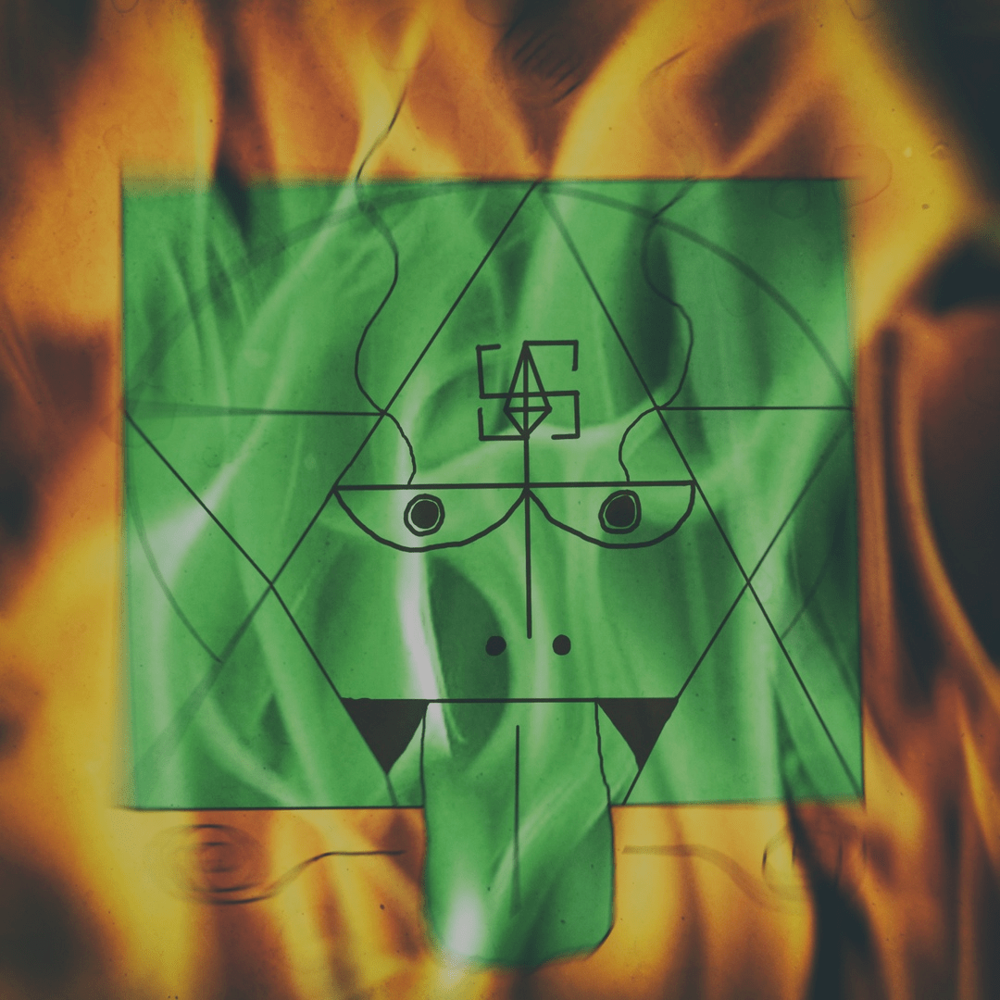

ПУТЬ МИРА 7

Путь мира
не напоминает ли он натягиваемый лук?
Стоящий высоко притесняет,
имеющий с избытком отнимает,
не знающий достатка помогает.
Путь Неба таков,
что оно ограничивает излишнее
и поддерживает недостающее.
Путь мира людей таков,
что они отнимают у тех, кто не знает
достатка,
и прислуживают тем, кто имеет
с избытком.
Но кто может, служа всему миру, "иметь
с избытком"?
Лишь тот, кто постиг этот Путь.
Вот почему мудрый
действует, но не надеется на других,
достигая успеха, не останавливается
на этом.
Ибо он не стремится к званию достойного.